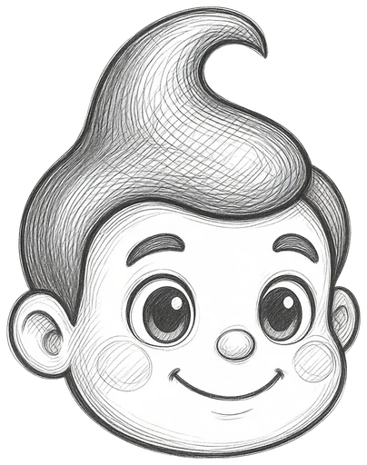
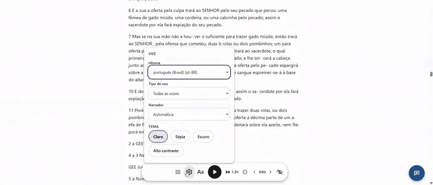
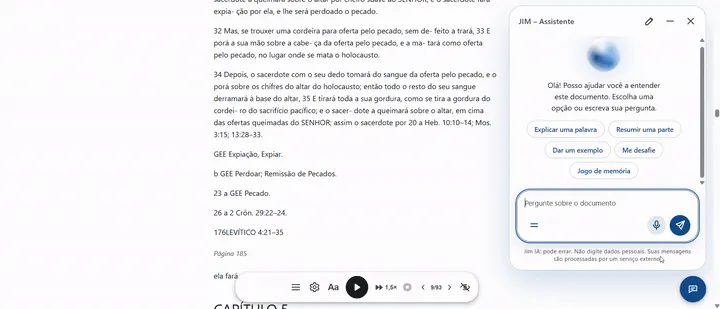

Sapiens : une brève histoire de l'humanité
92/100
Publié
2.2Logiciels libres · GPL · pour WordPress

Jim — Accessible Converter est le plugin WordPress gratuit qui convertit beaucoup de fichiers PDF, Word (.docx), Markdown et TXT en articles de blog ou pages de lecture immersive, avec lecture haute voix, assistant AI et audit SEO de 0 à 100 points intégrés.
Open source (GPL v2 ou ultérieure). La conversion se produit sur votre serveur sans API externe. Afficher le code dans GitHub
Chaque fois que vous montez un edict, livre, rapport ou article comme simple lien de téléchargement, trois choses se produisent:
Droits, devoirs et modalités de participation à l'association
Les personnes âgées de plus de 18 ans qui vivent dans la municipalité peuvent être associées et accepter le statut. L'inscription est gratuite et peut être faite au bureau ou sur le site Web.
Les réunions ont lieu deux fois par an, par e-mail. Chaque membre a droit à une voix.
Droits, devoirs et modalités de participation à l'association
Les personnes âgées de plus de 18 ans qui vivent dans la municipalité peuvent être associées et accepter le statut. L'inscription est gratuite et peut être faite au bureau ou sur le site Web.
Les réunions ont lieu deux fois par an, par e-mail. Chaque membre a droit à une voix.
Jim prend le fichier que vous avez déjà et le livre comme votre propre page WordPress : texte réel, accessible et avec le visage de votre site Web.
C'est la question que tous les clients posent, alors coupons juste à la poursuite: Jim n'utilise pas PDF iframe ou visionneur. Le texte devient contenu d'une page de votre site Web.
Le texte est dans le HTML de la page, pas dans une image ou un spectateur.
Les étiquettes montrent ce qui est sur la page.
Titres, paragraphes, listes, tableaux et images sont dans le code de page. Les titres proviennent des styles de titre du Word et des signets du PDF, lorsque le fichier les a, et ont vu la hiérarchie H2 et H3 et le résumé. Si le fichier est arrivé sans titres, l'Examen de la conversion et le bouton Titres corrects transforment automatiquement les lignes de section en titres réels sans rien renvoyer.
Par défaut, Jim supprime l'original après conversion : il n'y a que la page. Si vous préférez le stocker, Jim n'y lie pas et, par défaut, demande aux chercheurs de ne pas l'indexer (noindex, Apache et LiteSpeed; dans nginx, la documentation apporte la règle).
Chaque document reçoit une note calculée sur son serveur : titre clair, abstrait, auteur, hiérarchie des titres, lisibilité, images décrites et publication.
Postez en 1 clic ou par shortcode
Aucun auteur dans le dossier ? Entrez le nom ou l'utilisation Utilisez mon nom, mon titre et mon résumé, utilisez Détectez à partir du texte et corrigez automatiquement les titres. Le projet de loi est recalculé à temps.
La note montre ce qui manque. La position de recherche dépend également de votre site Web et de son contenu.
lecture à haute voix avec les voix du navigateur (API Web Speech), en soulignant le paragraphe lu, sans service audio payant.
taille du texte, thèmes clairs, sépia, noir et contraste élevé.
dans le document.
les extraits du lecteur de graffiti, génère des cartes pour partager et exporter les marques dans .txt.


Imaginez un avis de 80 pages qui répond immédiatement aux questions. Le lecteur ouvre le chat sur la page et demande par texte ou par voix.
Envoyer jusqu'à 20 fichiers (.pdf, .docx, .md, .txt) à la fois, avec des catégories, des balises, un auteur et un langage de batch. Une liste indique la taille et un sceau ou une erreur valide de chacun avant l'envoi, et la conversion est en attente, un fichier après l'autre.
| Sans Jim | Avec Jim |
|---|---|
| 6 étapes manuelles par fichier: recevoir, ouvrir, copier, coller, nettoyer les pauses et les titres, configurer le référencement. | 3 étapes jusqu'à 20 fichiers, traités en file d'attente: sélectionner le lot, convertir avec liste de contrôle et note, publier en 1 clic ou par shortcode. |
| Le visiteur télécharge le PDF et quitte votre site. | Le visiteur lit, écoute, met en valeur et partage dans son domaine. |
| Vous ne savez pas où se trouve chaque dossier. | Panneau avec la note exacte et la page où chaque document est publié. |
Un travail de 900 000 mots ou beaucoup de 20 rapports n'a pas besoin d'arrêter votre hébergement:
Jim existe pour démocratiser la publication : c'est GPL, le code est ouvert dans GitHub, le plugin ne suit pas les visiteurs ou utilise les cookies, et vous ne dépendez pas de l'abonnement, API à convertir ou personne d'autre pour garder votre bibliothèque dans l'air.
Pour ceux qui produisent des connaissances et veulent être lus:
Éliminez la barrière de téléchargement et offrez une lecture plus confortable, accessible et facile à trouver.
Véritable HTML, avec H2 et H3 de chapitres quand le fichier les a. Il n'y a pas de visionneuse iframe ou PDF.
Par défaut, il est effacé après conversion. S'il est stocké, Jim demande aux chercheurs de ne pas l'indexer (Apache et LiteSpeed).
Pas du tout. Jim ne fait pas OCR et il prévient avant de publier une page vide.
Pas du tout. Ils sont envoyés immédiatement et convertis en ligne, l'un après l'autre.
Oui, comme tout contenu WordPress, avec éditeur et révisions.
Il ne nécessite pas de programmes externes, et le plafond PDF suit la mémoire du serveur.
Oui. C'est un logiciel libre, GPL v2 ou ultérieur.
Pas du tout. Il s'en va, et vous utilisez votre clé ou un modèle local.